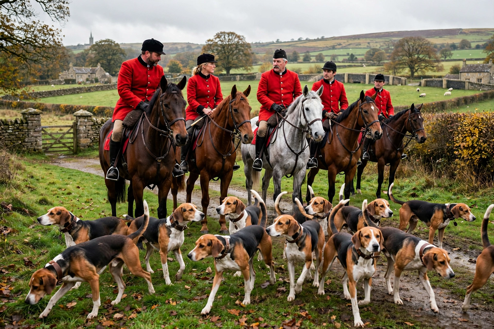

The Hunting Act 2004 (c. 37) is an Act of the Parliament of the United Kingdom which bans the hunting of wild mammals (notably foxes, deer, hares and mink) with dogs in England and Wales, subject to certain exemptions. It received royal assent on 18 November 2004 and came into force on 18 February 2005. Scotland had already banned the practice under the Protection of Wild Mammals (Scotland) Act 2002; Northern Ireland remained unaffected.
| Hunting Act 2004 | |
| Citation | 2004 c. 37 |
|---|---|
| Long title | An Act to make provision about hunting wild mammals with dogs; to prohibit hare coursing events; and for connected purposes. |
| Royal assent | 18 November 2004 |
| Commencement | 18 February 2005 |
| Enacted via | Parliament Acts 1911 and 1949 (after rejection by the House of Lords) |

A traditional fox hunt meet; hunting wild mammals with dogs was banned in England and Wales in 2005.
Opposition to hunting with dogs grew through the twentieth century, and Labour's 1997 election manifesto promised a free vote on the issue. A private member's bill by Michael Foster passed the Commons in 1997 but ran out of time in the Lords. The government set up the Burns Inquiry (1999–2000), which concluded that hunting with dogs "seriously compromises the welfare" of hunted animals, while stopping short of recommending a ban.
After several years of legislative deadlock between the Commons, which repeatedly voted for a ban, and the House of Lords, which favoured licensed hunting, the government invoked the Parliament Acts — only the seventh use of the procedure since 1911 — to enact the bill without the Lords' consent. The episode became a prominent modern example in the debate over House of Lords reform. The Countryside Alliance's legal challenge to the use of the Parliament Act 1949 failed, ultimately in the House of Lords itself (Jackson v Attorney General [2005]).
The Act makes it an offence to hunt a wild mammal with a dog, or to knowingly permit land or dogs to be used for such hunting, and bans hare coursing events. Schedule 1 exempts certain activities, including using no more than two dogs to flush out a wild mammal so that it may be shot for pest control or other specified purposes, hunting rats and rabbits, and retrieving hares that have been shot. Drag hunting and trail hunting — following an artificial scent — are not banned.
Hunts adapted by adopting trail hunting, though animal-welfare groups allege that it is used as cover for illegal hunting, and prosecutions under the Act have occurred regularly but in relatively small numbers. Repeal or amendment was promised in Conservative manifestos in 2010 and 2015, but a promised free vote was postponed and then dropped; the 2017 manifesto proposal was also abandoned. The Act remains one of the most contested pieces of animal-welfare legislation in modern British politics, dividing opinion sharply between rural and animal-advocacy constituencies.